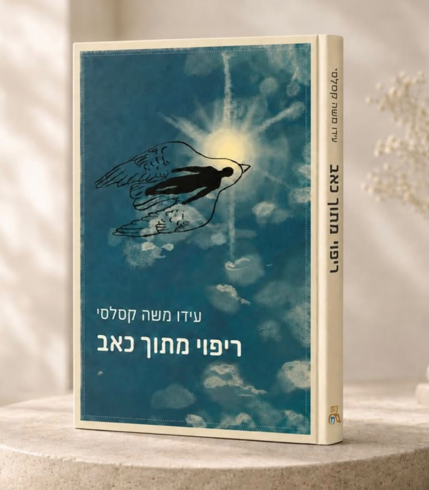

בגיל 12 עידו איבד את היכולת ללכת. בגיל 16 גם את היכולת לדבר, לשמוע ולבלוע. בגיל 17 הוא כתב ספר. זה הסיפור שלו — על מה שנשאר כשהכל משתנה, ועל התקווה שלא הלכה לשום מקום.
משלוח עד הבית · או להזמנה טלפונית: 050-9969916

עידו משה קסלסי הוא בחור בן 17 ממעלה אדומים. מילדות הוא חי עם NF1 — מחלה גנטית שמצמיחה גידולים על העצבים.
בגיל 12 התגלה אצלו גידול בחוט השדרה. שלושה שבועות אחרי הניתוח, כשכל חלום שלו היה פשוט לחזור לשחק כדורגל, הוא כבר היה משותק בצד שמאל של הגוף. ובדצמבר 2023 זה קרה שוב — הפעם הוא איבד לאט־לאט את היכולת לבלוע, לדבר ולשמוע.
אבל עידו לא הפסיק לכתוב. „ריפוי מתוך כאב" הוא מה שיצא מזה — ספר שלא מנסה לייפות כלום. הוא כותב על הגעגוע לעצמו מפעם, על כמה כל דבר קטן נהיה כבד, ועל זה שדווקא בתוך כל הקושי הזה — התקווה נשארה.
יש אנשים שמתגעגעים למקומות, לתקופות, לתחושות. אני מתגעגע גם לעצמי — לגרסה שלי מפעם.
לא ספר על מחלה. ספר על מה שאנחנו עושים עם מה שקורה לנו.
עידו לא מספר עליכם — הוא מספר על עצמו. בכנות, בגובה העיניים, מתוך מה שהוא באמת מרגיש.
לא רק געגוע לימים שהיו, אלא לגרסה שלנו מפעם — ומה עושים כשהיא כבר לא כאן.
לא תקווה נאיבית. התקווה שנשארת גם אחרי שהכל השתנה, וממשיכה למשוך קדימה.
להזמנת „ריפוי מתוך כאב" — שלחו הודעה בוואטסאפ, ועידו יחזור אליכם.
הזמינו עכשיואו בטלפון: 050-9969916 · הודעה פרטית באינסטגרם @ripuy_mitoch